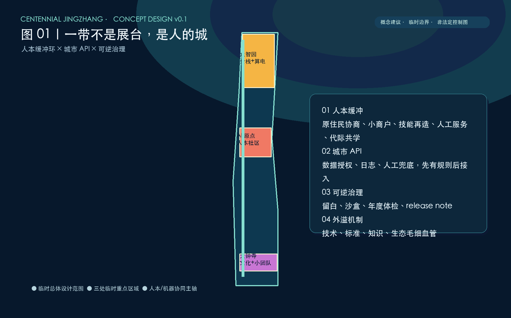
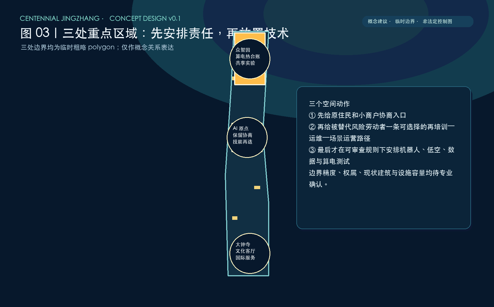
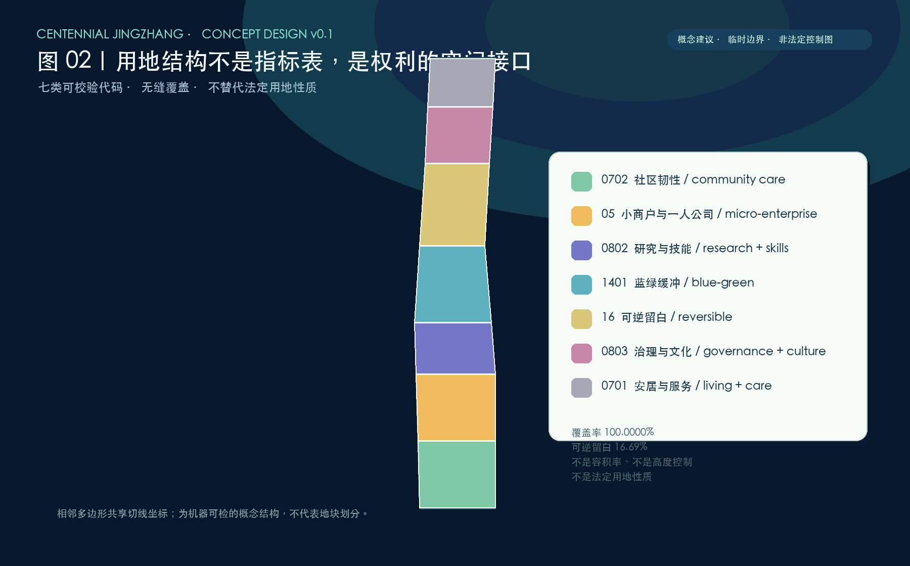
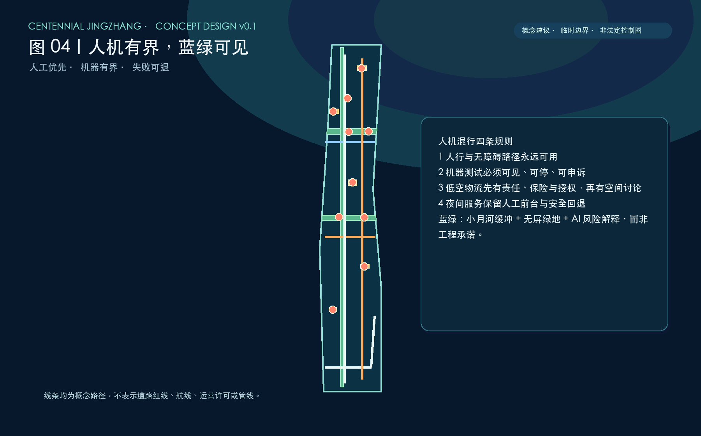
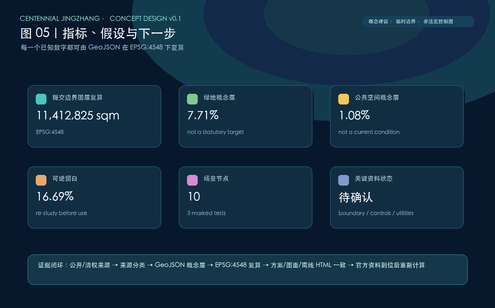

CENTENNIAL JINGZHANG · CITY GOVERNANCE v0.1
从 AI 的展台，到 AI 时代人的城
正式投稿可视化｜概念建议 / 参考方案｜全离线｜临时粗略边界，不是法定控制图
official_boundary=falsegeometry_role=provisional_constraintEPSG:4548 recomputation
总览地图 / 三层范围

统筹研究范围、总体设计范围与三处重点区域采用不同的证据粒度；公开包没有官方精确边界，所有空间图仅为概念约束。
重点区域 / AI 场景

众智园、AI 原点社区和大钟寺均为临时 polygon。十个场景节点中，机器人、低空物流、内涝模拟被明确为需先完成安全、保险、责任与数据授权的测试验证。
用地分区

七类可校验代码无缝覆盖提交边界；这是一张概念结构图，不是法定用地性质、容积率或高度控制图。
交通慢行 / 蓝绿公共空间 / 建筑

人行、无障碍与人工服务优先；机器测试有界且可退。建筑只以活动承载基底示意，不表达工程规模。
核心指标

更新项目 / 任务覆盖
五个可撤回的项目族：社区保留与小商户协商、技能再造走廊、人工优先公共服务、具身智能公共测试、算电热与数据治理台账。合规矩阵覆盖公告 1.3/1.4/1.5 全部任务与 agent.1—agent.6；设计深度矩阵 15 项均有结构化证据。
自检状态
SELF-CHECK TARGET: deterministic validation / spatial review / visual packaging / professional evidence — PASS
最终结果只在执行仓库脚本后认定；本页不构成官方审核或背书。
来源
公告、任务书、本地标准快照、source registry、临时几何；IMF、WEF、北京能效政策与国际案例均为 background_only 语境资料。
假设
官方精确边界、控规、权属、既有建筑、交通、管线、水文、热网与数据授权尚待取得。请勿将本图用于许可、工程或法定面积判断。